Video
Much of this material on cycles and the ecliptic plane is covered in this short
video.Cycles
- The Earth spins on its axis roughly once every 24 hours,
in a counterclockwise sense when seen from above the North Pole.
- A solar day is about 4 minutes longer than a sidereal day, as shown
by this animation.
- The Moon orbits the Earth roughly once a month.
- The Earth orbits the Sun roughly once a year.
- The Earth's orbit about the Sun defines the
ecliptic plane, in which all the other
planets orbit as well.
- 12 constellations lie on the ecliptic plane and define the
Zodiac.
- From Earth's perspective, the Sun passes one Zodiac constellation per month and cycles through all
12 once a year.
- The Earth's North-South axis is not fixed in space but rather slowly
precesses with a period of 26,000 years.
- During the precession, the Earth's axis traces out an imaginary conical
surface in space and a circle on the celestial
sphere.
- The Celestial North Pole or CNP (i.e., the projection of the
Earth's axis onto the northern sky) moves about 1° along this circle every 72 years (360x72 =
26,000).
- Stars that happen to lie at or near this circle would represent the
North Star at the time. Polaris is the North Star today.
- Vega was
the North Star 13,000 years (i.e., half a precession cycle) ago and
will be again 13,000 years from now.
- Thuban was the North Star about 5,000 years ago and will be again in
about 21,000 years from now.
- Earth's climate may be affected by this precession, a phenomenon
known as
Milankovitch cycles.
- Stars follow well defined orbits about the
center of the galaxy.
- Our Sun orbits the center of the Milky Way with a period of 230 million
years.
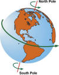
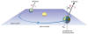
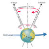
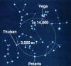
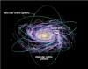
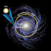
Movement in the sky
- To the naked eye, planets look like stars.
- However, they do not twinkle like the stars and they do not keep the
same annual rhythms.
- The planets are known as wanderers because they change their positions
with respect to the background stars. (The term "planet'' is derived from the Greek word for "wanderer.")
- From Earth, planetary motion appears uneven and somewhat complex.
- Planets generally appear to drift
eastward against the background of fixed
stars.
- Occasionally, planets appear to stop, reverse direction (i.e.,
move westward), and then continue eastward again.
- This temporary backward movement is called "retrograde motion".
- Retrograde motion is an illusion related to to the movement of the
Earth-based observer. This
applet demonstrates how Mars and the Sun move across the Zodiac and the
retrograde motion of Mars. Click here
to read more about retrograde motion.
- In the course of a day (due to the rotation of the Earth on its axis):
- Stars rise in the east and set in the west.
- Stars follow circular paths
centered on the Celestial Poles. Time-lapse photography reveals these
beautiful star trails.
- Stars sufficiently close to the North or South Celestial Pole always
appear above the horizon; these are known as
circumpolar stars (relative to the location of the observer).
- In the course of a year, stars and constellations appear to drift westward.
- Over a period of a human lifetime, the stars do not noticeably move
relative to one another.
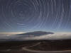
Ecliptic plane
- The Earth's orbit about the Sun defines the
ecliptic plane.
- All the planets orbit in nearly the same plane--the ecliptic plane.
- The path of the Sun in the sky defines the edge-on view of the same ecliptic plane.
- As seen from the Earth, the other planets follow paths which are similar
to that followed by the Sun.
- The 12 constellations which lie on the ecliptic are known as the Zodiac.
- All planets in the sky wander across the Zodiac (and never outside it).
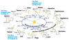
Seasons
- The seasons result primarily from the tilt of the Earth's axis.
- The Earth's slightly (around 1%) varying distance to the Sun during the course
of its orbit is not a major factor. In fact, in the northern hemisphere, the Earth is nearest the Sun
(perihelion) in Winter and farthest (aphelion) in Summer.
- The tilt relative to the Sun determines how
direct (i.e., perpendicular)
sunlight is. The more direct the sunlight, the more concentrate the
light energy, the warmer the surface.
- When the North Pole is tilted toward the Sun, the northern hemisphere
experiences summer and southern hemisphere experiences winter.
- When the North Pole is tilted away from the Sun, the northern
hemisphere experiences winter and the southern hemisphere experiences
summer.
- For comparison, the orbit of Mars is
significantly more elliptical than that of Earth. Consequently, Mars's
seasons are affected both by its tilt (which is very similar to that of
the Earth) as well as by its orbital position. Because the Martian
winter in the northern hemisphere occurs at the perihelion, the northern
winter is mild and brief, while the southern winter is cold and long.
- With regard to the seasons, there are 4 special points in the
Earth's orbit about the Sun.
- Summer solstice: Around June 21, the sun is highest in the sky and the
North Pole experiences 24 hours of sunlight.
- Autumnal equinox: Around September 21, the day is 12 hours long (and
getting shorter) and the night is 12 hours (and getting longer).
- Winter solstice: Around December 21, the sun is lowest in the sky and
the North Pole experiences 24 hours of darkness.
- Vernal equinox: Around March 21, the day is 12 hours (and getting
longer) and the night is 12 hours (and getting shorter).
- The southern hemisphere experiences the opposite seasons.
- The Tropic of Cancer, or Northern
tropic, marks the most northerly latitude at which the sun can appear
directly overhead at noon at the June solstice. The equivalent latitude in
the southern hemisphere is called Tropic of Capricorn, or Southern tropic.
- The Arctic Circle marks the southern
extremity of the polar day (24 hour sunlit day, often referred to as the
"midnight sun") and polar night (24 hour sunless night). On the Arctic
Circle these events occur, in principle, exactly once per year, at the June
and December solstices, respectively. The equivalent latitude in the
southern hemisphere is called the Antarctic Circle.
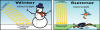
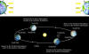
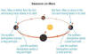
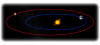
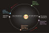
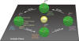
Daily path of the Sun
- Because of the Earth's West-to-East rotation, the Sun appears to rise in
the East and set in the West.
- Strictly speaking, the Sun rises exactly in the East and sets exactly in
the West on only two days of the year--the two equinoxes.
- During summer in the Northern Hemisphere, the Sun rises north of East
and sets north of West. In winter, the Sun rises south of East and sets
south of West. Only on the Spring and Fall Equinoxes does the Sun rise
exactly in the East and set exactly in the West.
- When the Sun rises north of East, it passes higher through our sky on
its way to the western horizon. Summer days are long because the Sun must
travel through more sky before setting. The farther south the Sun rises, the
lower it stays in our sky and the shorter the days.
- On the longest day of the year, the Summer Solstice, the Sun reaches its
highest altitude in our sky at midday. At midday the Sun is due South and it
crosses the meridian, an imaginary line that divides your sky into eastern
and western halves. Each day after the Summer Solstice, the Sun's altitude
at midday will be slightly lower until it reaches its lowest midday altitude
on the Winter Solstice, the shortest day of the year.
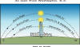
Summer and winter solstices
| Summer in the northern
hemisphere 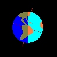
Winter in the southern hemisphere |
|
Winter in the northern hemisphere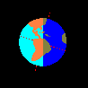
Summer in the southern hemisphere |
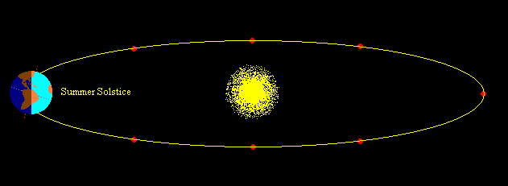
NOTE: This is not to scale; in reality, the sun is a lot bigger to scale, and
Earth is a lot further away.
Astrological ages
- In the same manner in which individuals born at different times of the
year are thought to be dominated by different astrological signs,
astrologers also tend to view different historical periods as being
dominated by the influence of particular signs.
- Because of the precession of the Earth's axis, the vernal equinox moves
through all the constellations of the Zodiac over the 26,000 year precession
period. This phenomenon is known as the precession of equinoxes. The period
during which the vernal equinox remains in a particular
Zodiac sign is known as an astrological age
and each age lasts about 2150 years (one-twelfth of 26,000 years).
- Presently, the vernal equinox is in the constellation
Pisces.
- This age is commonly described as the age of faith and religion.
- It began roughly with the birth of Christ, about 2000 years ago.
- The New Testament is replete with fish symbolism.
- It should not be too surprising, therefore, that the symbol of
Christianity has been fish.
- The preceding age was the Age of Aries, often described by astrologers
as an age of aggression and enterprise.
- The Arian Age ushered in efforts to replace polytheism with
monotheism.
- This is the age of Moses and the Old Testament.
- The symbol of Aries can be seen as
representing the power of multiple gods streaming down into a single
god-head.
- The Jews still blow the shofar (ram’s horn) in commemoration.
- The age of Taurus (the bull) preceded the Age of Aries.
- The 'golden calf' represents represents idol worshiping in general
and a bull deity in particular, prominent in this age.
- Moses condemning his own people upon finding them worshiping a
'golden calf' after coming down from Mount Sinai. This condemnation
ushers in the next age, the age of the Old Testament, the Age of Aries.
- The vernal equinox is approaching Aquarius.
- According to astrological mysticism, the age of Aquarius is
characterized by spiritual enlightenment and unusual harmony and
understanding in the world. Unfortunately, there is no evidence that the
position of the vernal equinox with respect to the constellations of the
Zodiac will bring such harmony.
- "The Dawning of the Age of Aquarius" was a song in the musical Hair,
which celebrated the Age of Aquarius.
- This interesting
video ("Zeitgeist") on the topic of astrotheology discusses how the
various religions and mythologies were born from observations of cycles in
the sky.
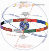
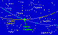
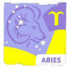
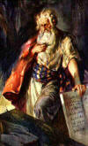
Page last modified: